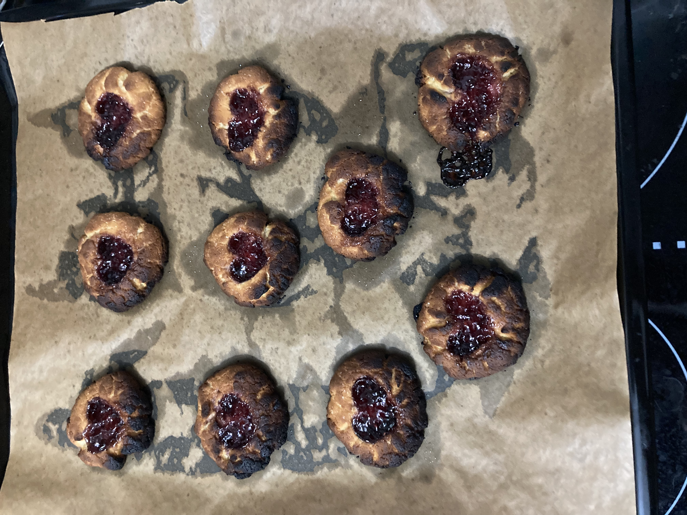
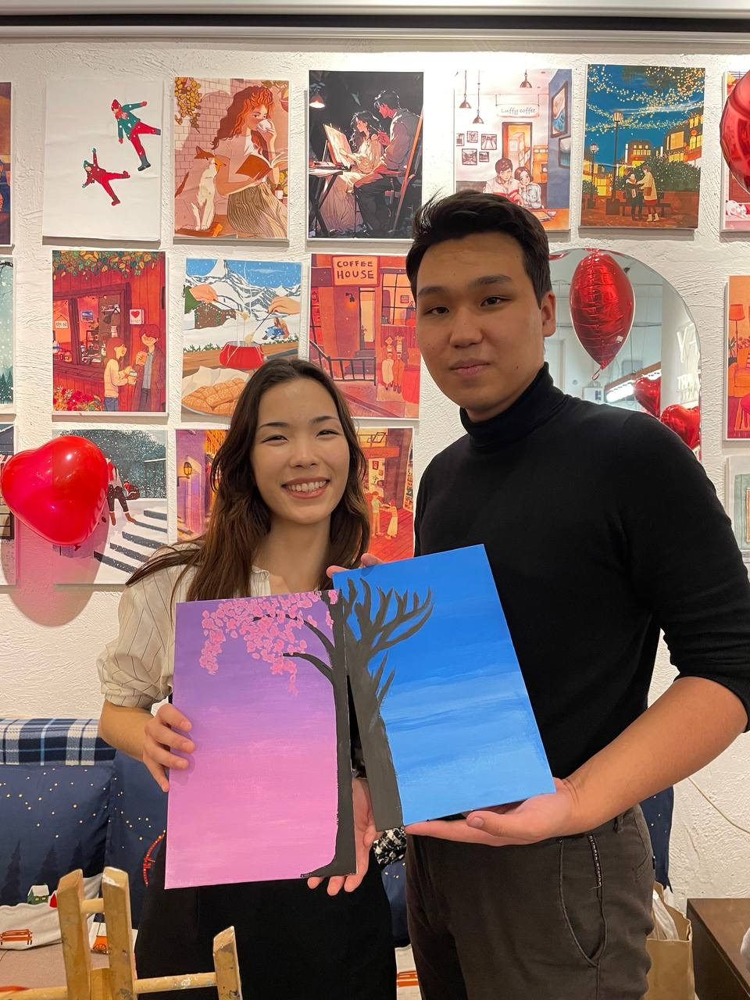
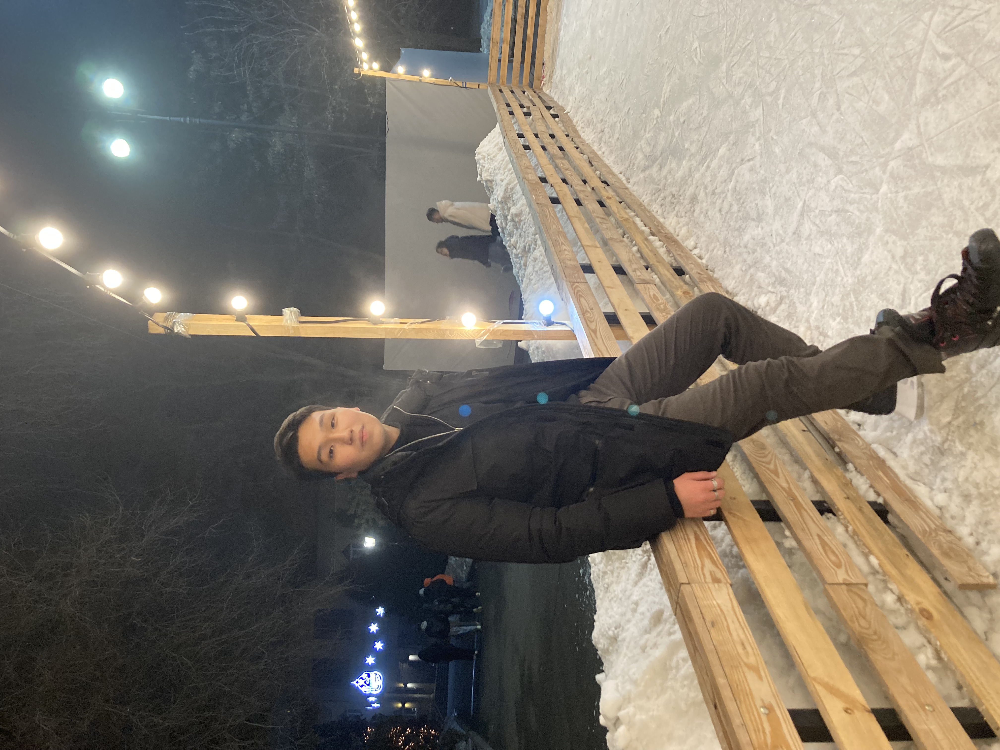
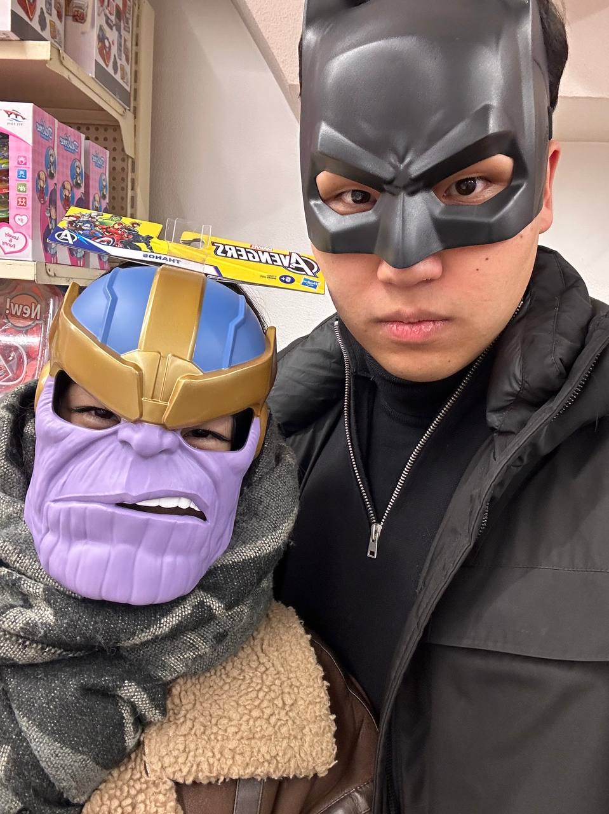

14 февраля
Я тот день помню почти поминутно. Настолько яркое воспоминание для меня, настолько приятное, настолько красивое и сказочное.

Стоя ночью, вся в соплях и слезах, что я вообще не умею готовить, а ты любишь хозяйственность, я пыталась приготовить для тебя печеньки от всего сердца, даже еще не зная, какой подарок для меня приготовил ты. И вот, я вытаскиваю первую партию - и они выглядят так. Моему разочарованию не было предела, но именно эти печеньки стали главным символом моей любви. Потому что депрессняк по печенькам-неграм не оставновил меня и я, взяв себя в руки, через силу заставила приготовить вторую партию. И наконец-то спустя 4 часа суетливой готовки вытащенный мною противень из духовки полностью удовлетворил меня и я отправила их остывать с полным ощущением победы.
Потом у меня была пропедевтика детских болезней, на которой нас всех очень сильно задержали. Именно в этот день! Как же было страшно не успеть, ведь ты мне написал быть готовой, времени оставалось совсем мало, а мне еще надо было заехать домой, накраситься, одеться прилично. В дикой суете и тряске я ехала на этой гробовозке, 45-й автобус как обычно еле вмещал в себя всех людей, решивших проехаться именно на нем. Я забегаю домой и в ужасе осознаю, что у меня жирные волосы! Итак, у меня есть 14 минут максимум на мытье головы, 6 минут на сушку, 13 минут для макияжа, 2 минуты, чтобы решить, что надеть и еще 2 минуты, чтобы одеться. Опаздывать нельзя.
В дикой спешке я еле успевала дышать. Мне приходит то самое заветное сообщение: "Я подъехал, выходи". Я быстро складываю печеньки, обуваюсь, смотрюсь в зеркало и думаю: "Пипец, Лаура, выглядишь ужасно", плюю и выбегаю.
Мы едем в такси, ты делаешь мне комплимент и я улыбаюсь, стараясь не показывать, что минуту назад бегала по дому как угарелая и сейчас почти хочу плакать от того, что мне не нравится, как я выгляжу. Но есть мысль поважнее - куда мы направляемся. Ведь это был твой сюрприз. Я прям умирала от любопытства.
О, точно, печеньки! Ты попробовал и очень сильно хвалил их. И маленькая Лаура внутри меня пищала от радости. Ура, у меня получилось. Теперь хотелось радовать тебя еще чаще такими презентами.

Мы едем по каким-то закаулкам, мне немного страшно. Приезжаем к тому самому месту, я вижу, куда мы приехали и поверить своим глазам не могу. Это то самое арт-кафе, про которое я когда-то говорила, отвечая на твой вопрос во время нашего первого звонка, куда бы я сходила на свидание! Во мне смешались столько чувств: радость, умиление, шок, нежность, удивление, счастье. Но это точно лучшее, что для меня когда-либо делали за все время до того момента. Я даже не могла поверить, что это все реально происходит со мной, ведь я всегда считала себя настолько обычной серой мышкой, которая не заслуживает такого ухаживания. Это казалось чем-то сказочным, непостижимым, что я могу увидеть исключительно в чьем-то инстаграме. Но нет, это реально я, это реально происходило со мной, это реально ты захотел и ты сделал для меня, причем просто из своих собственных чувств, без злых или корыстных целей, без плохих намерений и намеков. Просто для меня.
Следующие два часа проходили просто чудесно, я настолько наслаждалась процессом, твоей компанией, так еще и тортик такой вкусный был. Все еще сложно было поверить в реальность происходящего. Ты не просто сделал замечательный подарок, ты заставил сиять маленькую Лауру. И сомнений становилось все меньше, а доверие к тебе становилось все больше. Не из-за самого подарка, не из-за ресурсов, потраченных на меня, а благодаря твоей внимательности и нежности ко мне и моим чувствам, желаниям. Я никогда не оценивала твои подарки по деньгам, я всегда видела в них нечто большее и значимое, твои размышления над тем, что мне понравится, желание сделать меня счастливой. И я безумно это ценю и люблю в тебе.


На этом день не закончился и дальше мы пошли на каток. Ты буквально исполнил целых два моих больших желания. То, насколько моя шкала радости была высоко в тот день, стало для меня большой встряской, ведь я так счастлива не была уже очень много лет. Может я и не показывала из-за того, что было много страхов оттолкнуть, испугать, вызвать жалость, но я была искренне в шоке, в приятном шоке.
А еще потом мы прогулялись до марвина и еще долго ходили между полками и болтали обо всем на свете. Мне так не хотелось, чтобы этот день заканчивался, это была дофаминовая бомба. И даже приехав домой, у меня очень долго не спадала улыбка с лица. Да и вообще, после каждого нашего свидания я чувствовала такую радость, что потом как обкуренная до самого сна ходила и улыбалась во все 32 зуба.
Особенно для этого сайта данное письмо очень важно, ведь сегодня - в день, когда я наконец-то показала тебе свой "эксперимент" - прошел ровно год с этого свидания. И поскольку ты находишься очень далеко, в этом году я хотела тебя порадовать тем, чего ты совершенно не ожидал. Спорим, ты даже не догадывался, над чем это я так долго экспериментирую и тщательно скрываю от тебя)
Безумно люблю тебя, мой любимый! Спасибо тебе за то, что делаешь меня такой счастливой!